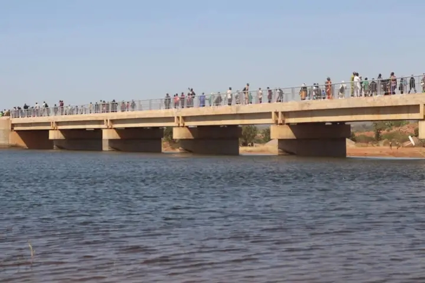
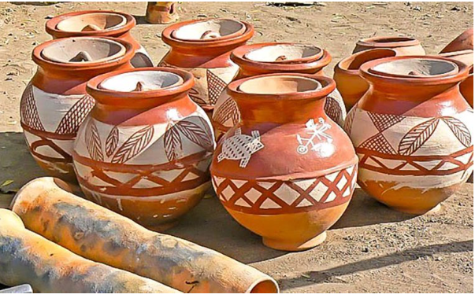
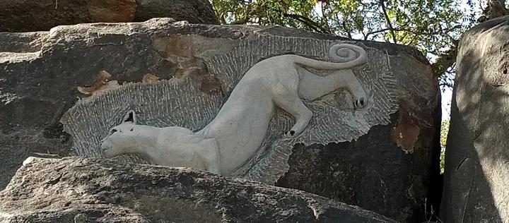
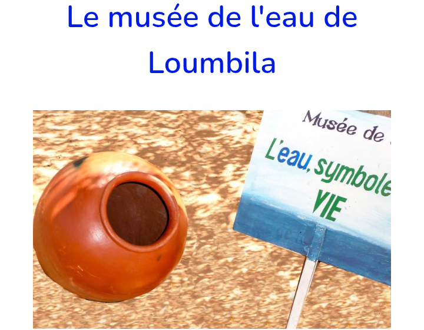
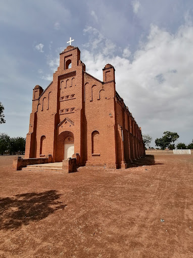

Sites patrimoniaux à découvrir à Ziniaré

Barrage de Ziga

Poterie céramique

Site de Laongo
Maussolée NAABA OUBRI

Musée de l'eau
Musée NANEMA
Sanctuaire animalier

Église SAINT-PAUL
Teinturerie de BOUSSE
Mare aux crocodiles